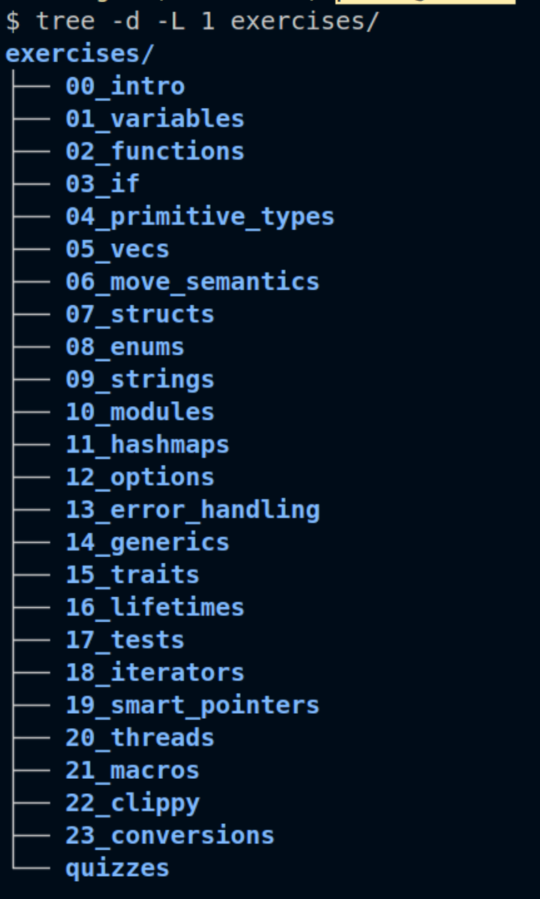
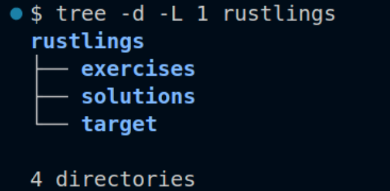
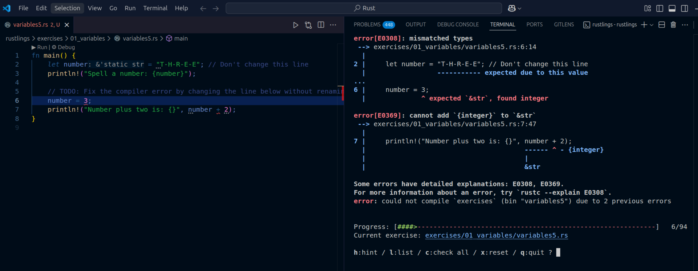
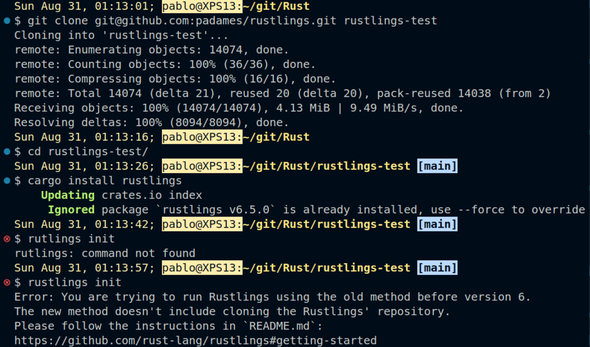
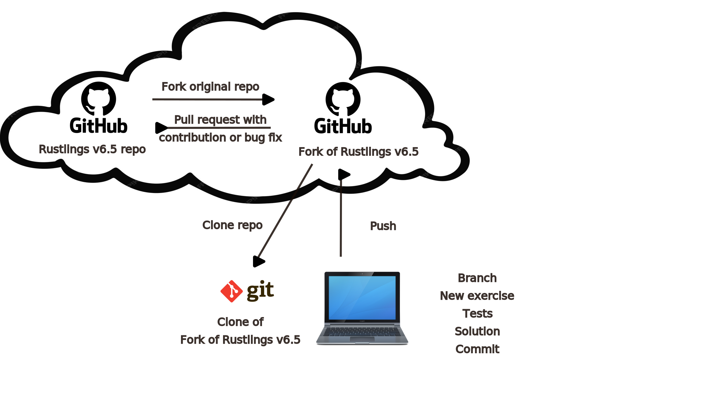

What is Rustlings?
Rust has killer apps for systems programming, web servers, command-line tools, blockchain tools, game engines, networking and web assembly. However, a less spoken killer app of sorts is its welcoming and friendly community.
This community creates and maintains resources for all newcomers through the free online book The Rust Book and the accompanying set of exercises called Rustlings.
Rustlings exercises take you on a whirlwind tour through Rust land. It starts with the humble flats of variable declaration and drives you through the ambitious hills of multithreading syntax for fearless concurrency. It makes stops along the way on the valleys of traits and structs for complex data modelling, the streams of error definition to avoid exceptional behaviour from bumping the regular flow of execution when returning from functions, and the forests of iterators and smart pointers, where the canopy of simple ergonomic patterns allows you to get the job done in safety.

What does Rustlings do?
It is an interactive exercise framework. You work through the exercises one by one in sequential order or in any desired order by selecting the next exercise to work on from the full list. The framework keeps track of the exercises that have been solved successfully so you are aware of your progress. Each exercise has references to the section of the book being applied through the exercise.
Rustlings exercises have tests or just the main function plus data structures, and incomplete or missing statements. Once the missing parts are filled in and the tests pass successfully, one can move on to the next or quit the program.
Installation
This post is about the change that version 6 brought to this project. It used to be necessary to clone the GitHub repository to be able to install the Rustlings executable that started tracking the exercises as you solved them.
However, now there is no need to go through Github or even git to work on Rustlings. The program became a package on crates.io after version 6. As such you can install it following the traditional recipe cargo install rustlings. After the installation you will have the following three folders in the rustlings directory:

Typing rustlings init at the shell while on the rustlings folder for the first time will complete the setup. To get information type rustlings --help and to get you started working type rustlings, that will get the interactive mode on. The actual coding part, necessary to solve the exercises is done on a second, separate terminal window where you can edit the exercise file the interactive session points you to. Any Interactive Development Environment, IDE, will do. VS Code is very popular these days, so you can start the interactive program on the terminal emulator window while using the regular editor windows to make the code changes on the exercise file. Ruslings tracks the changes you do on the text file and updates the status accordingly until the exercise successfully compiles and all tests pass. The image below illustrates a VS Code session where this process is happening as described.
!

variables5.rs. On the right is the Rustlings interactive terminal session pointing to the compiler messages for the same file and the interactive menu at the bottom.One last caveat, if you execute the command cargo install rustlings on the top folder of a cloned fork of the Rustlings repo, and then try to initialize the program (only necessary before you run it the first time), you will see an error and won’t be able to run the program. Have a look at the image below.

So, what is the role of the official Github repo now that a self-contained crate has replaced it? Read on for my analysis.
Git and Github
When you install the Rustlings crate on your machine, your solutions will be stored in the file system in the folder called exercises. You can compare your solution versus the exercise author’s solution in the corresponding file of the same name under the folder called solutions. Now imagine you want to do keep a backup of your work in the cloud as you go through the many chapters of the book. This is a process that may take months for some. Also what if you wanted to transfer your files, at their current state between two of your computers, maybe between a desktop and a laptop?
For those use cases, your Github account is an ideal solution. Avoid cloning or forking the official Rustlings repo. Simply start a new repo on the machine where you installed Rustlings and setup a remote repo on your GitHub account. At that point you can clone your own repo to other machines, work from them and push to GitHub as a means to keep everything in sync.
If, on the other side, you want and can contribute to the Rustlings project, then you need to follow the traditional GitHub fork, branch, and pull-request workflow. This is useful pattern for code review. The usual contributions can be a new exercise or a legit bug fix to something that you have found not working correctly. A new exercise may offer practice on a yet un-covered section of the book.

Even when you follow the GitHub workflow you will likely have to do all your work on the regular installation and only after your work is complete add it to the branch of a clone of the official fork in your GitHub account to start a pull request from the branch of the forked repo.
Conclusions
You don’t have to fork or clone the official Rustlings repo on Github anymore if all you want is to learn Rust by practicing while you read the book. You may still use your GitHub account and plain git to backup your work and share your specific solutions with others if you choose to do so.
If you want to become a Rustlings project contributor then the traditional GitHub workflow for Open Source projects applies. In that case it may be better to do your software development on a Rustlings installation and after the work is completed, follow the full GitHub workflow and wait for the pull request to be approved and merged into the official main branch. You will only get your changes as part of the official project after a new crate release.